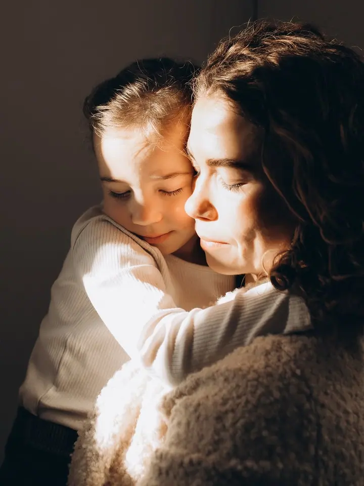
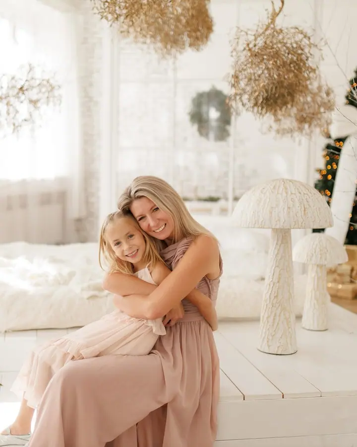
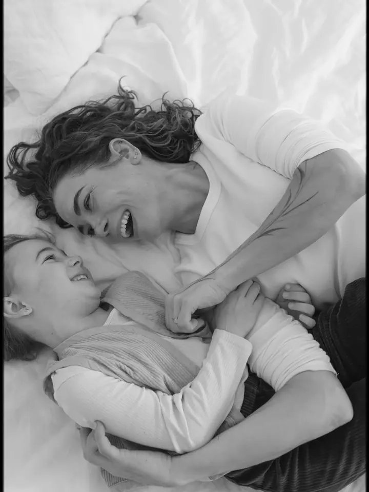

Rodinné focení
Lifestyle focení rodin venku v přírodě nebo u vás doma. Žádné strnulé pózování, jen vy, vaše děti a to, jak spolu opravdu jste.

Jmenuji se Romi Lizancová a fotím rodiny, miminka a svatby v Poděbradech, v Praze a okolí. Sama jsem máma jednoho rošťáka, takže dobře vím, jak rychle ty malé chvíle utíkají.
Rezervovat termínJsem fotografka z Poděbrad a nejraději fotím lifestyle. To znamená žádné strnulé pózy a úsměvy na povel, ale obyčejné chvíle, ve kterých je vidět, jak se máte rádi. Objetí, smích, rozcuchané vlasy a pohledy, které nikdo nehraje.


Jsem máma jednoho rošťáka a právě díky němu vím, jak rychle děti rostou a jak cenné je mít ty chvíle na fotkách. Proto se při focení nikam nespěchá. Děti můžou běhat, vrtět se i zlobit, i z toho vznikají ty nejhezčí snímky.
Kromě rodin a miminek fotím také svatby a brand fotky pro podnikatele. Ať je to cokoli, chci, aby se vám fotky líbily i za dvacet let a abyste se v nich poznali takoví, jací opravdu jste.
Co fotím
Lifestyle focení rodin venku v přírodě nebo u vás doma. Žádné strnulé pózování, jen vy, vaše děti a to, jak spolu opravdu jste.
Doprovodím vás svatebním dnem od příprav až po večerní chvíle. Vyprávím váš příběh i se všemi emocemi a detaily, na kterých vám záleží.
Jemné focení miminek a prvních měsíců s nimi. V klidu, v pohodlí a v tempu, které určuje vaše miminko.
Fotky pro vaši značku a podnikání. Přirozené snímky, které ukážou vás a to, co děláte.
Postup
Napište mi přes formulář nebo e-mail, co byste si představovali a jaký termín se vám hodí.
Probereme místo, oblečení i to, kdo všechno bude na fotkách, abyste do focení šli v klidu.
Užijeme si společný čas bez spěchu a strojeného pózování. Já se postarám o to, aby nic důležitého neuteklo.
Fotky pečlivě vyberu a upravím a pošlu vám je v online galerii, odkud si je snadno stáhnete.
Otázky
Nejčastěji v Poděbradech, v Praze a okolí. Fotit můžeme venku v přírodě, u vás doma nebo na místě, které máte rádi.
To je úplně v pořádku. Sama jsem máma rošťáka, takže vím, že děti mají svou hlavu. Přizpůsobíme se jim a často z toho vzniknou ty nejpřirozenější fotky.
Doporučuji pohodlné oblečení v jemných, ladících barvách bez velkých nápisů. Před focením vám s výběrem ráda poradím.
Napište mi, kde se budete brát, a domluvíme se. Ráda za vámi přijedu.